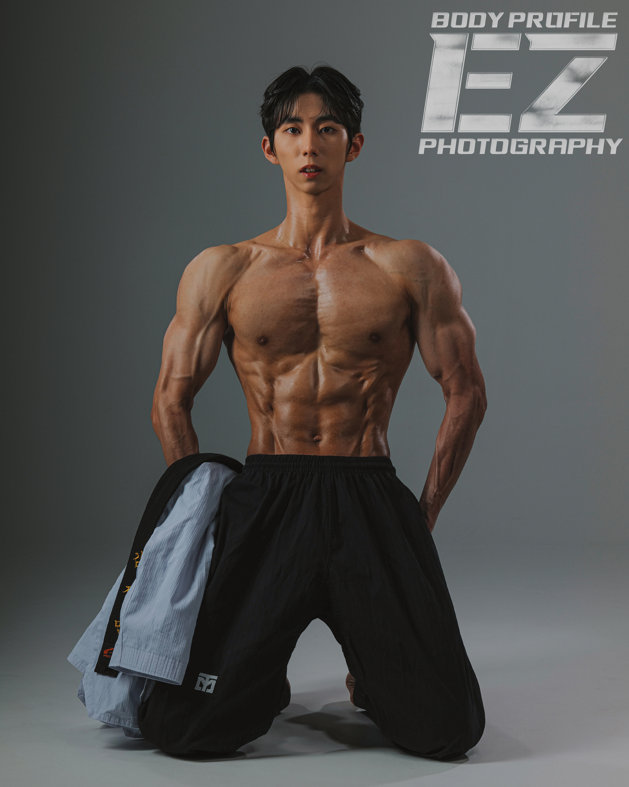
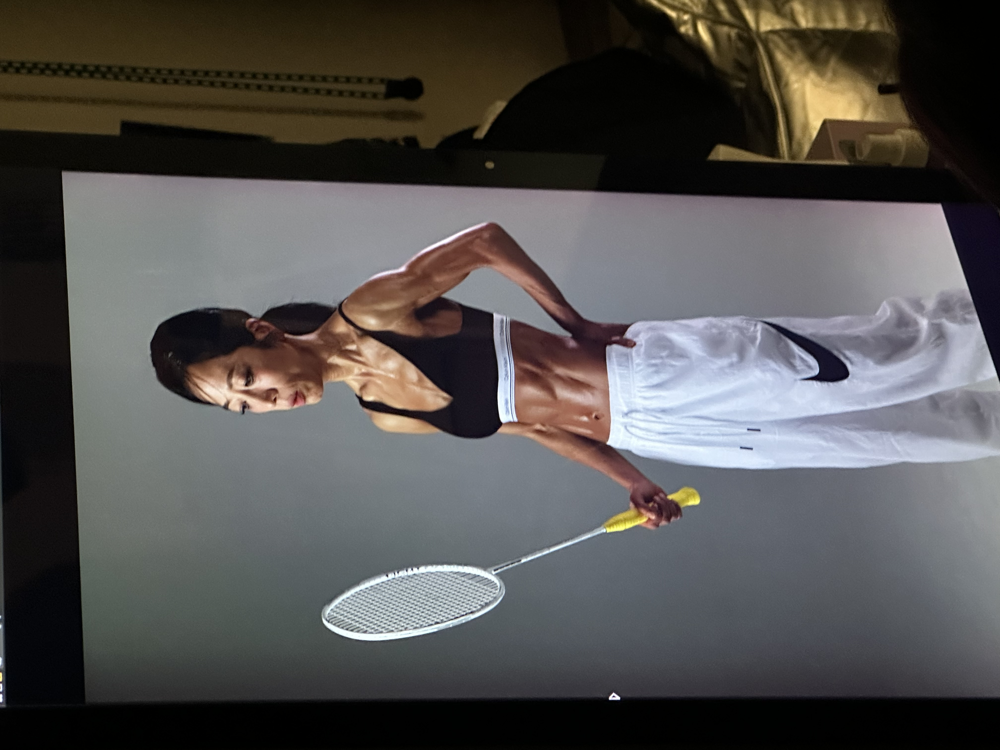
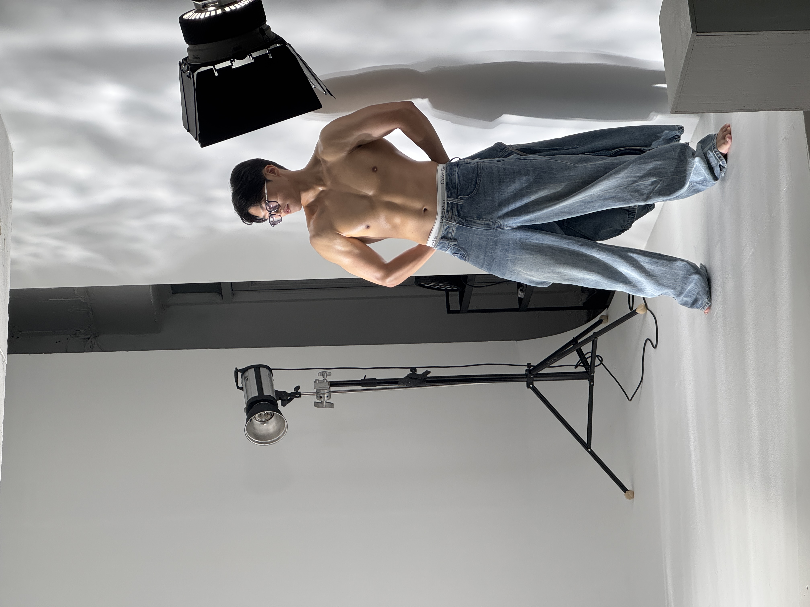
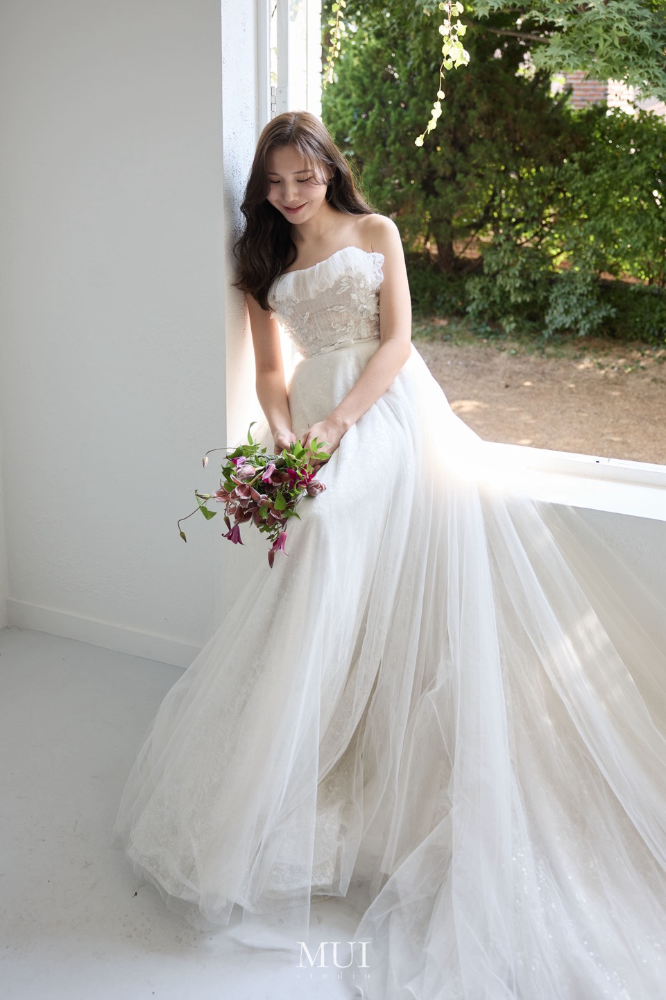
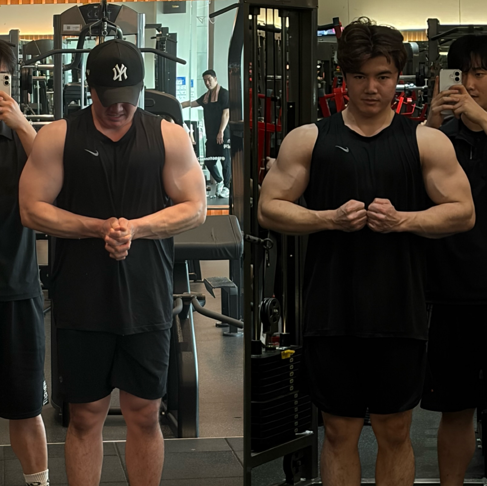

1986 FITNESS / KIM JAE HYUN
꾸준했던 운동을,
목표에 맞는 변화로.
김재현 트레이너
대회 준비 · 바디프로필 · 다이어트
어떤 운동을, 왜 해야 하는지부터 함께합니다.

COMPETITION & BODY PROFILE
준비하는 순간부터,
촬영과 무대에 서는 날까지.
목표를 함께 준비한 경험.
사진을 누르면 크게 볼 수 있습니다.
10명 이상
회원 바디프로필 촬영 및 대회 출전 지도 경험
트레이너 제공 소개 기준 · 웨딩드레스 촬영을 위한 몸 만들기도 상담합니다.대회 준비와 현장
바디프로필과 웨딩 촬영




개별 회원의 기록이며, 운동 결과와 준비 기간은 개인에 따라 다릅니다.
WHY YOUR TRAINING MATTERS
매일 운동하는데,
변화가 더디게 느껴지나요?
체중은 그대로이고
자세가 맞는지 모르겠고
어디에 힘을 줘야 할지 어렵고
루틴은 매번 비슷하다면
운동을 안 해서가 아니라, 목표에 맞는 운동 방법을 아직 찾지 못했기 때문일 수도 있습니다. 현재 상태와 운동 습관을 살피고 필요한 방향을 함께 정합니다.
PT는 옆에서 횟수만 세는 시간이 아닙니다. 어떤 운동이 필요한지, 왜 하는지, 어느 근육을 어떻게 써야 하는지를 이해하는 과정입니다.
TRAIN FOR YOUR GOAL
목표가 선명해지는
세 가지 커리큘럼.
누르면 자세한 수업 내용을 볼 수 있습니다.
01 / COMPETITION체계적인 대회 준비현재 상태부터 무대 일정까지, 준비 과정을 단계적으로.상세 커리큘럼 보기상세 접기+
02 / BODY PROFILE바디프로필 · 촬영 준비바디프로필과 웨딩드레스 촬영을 위한 몸 만들기.상세 커리큘럼 보기상세 접기+

03 / DIET & TRAINING변화를 기록하는 다이어트체중만이 아니라, 자세와 운동 수행도 함께 살펴봅니다.상세 커리큘럼 보기상세 접기+
RECORD THE CHANGE
수업의 변화는,
기록으로 함께 확인합니다.
수업 후 촬영한 사진으로 자세와 근육 사용을 돌아보고, 다음 수업에서 보완할 부분을 정리합니다.
비포·애프터는 체중 숫자뿐 아니라 몸의 변화와 훈련 과정을 함께 살피는 기록으로 활용합니다.
START WITH A CONVERSATION
지금의 운동 방법부터
함께 확인해 보세요.
처음부터 장기등록을 결정하지 않아도 괜찮습니다.
내 목표에 어떤 운동이 필요한지 편하게 상담해 보세요.